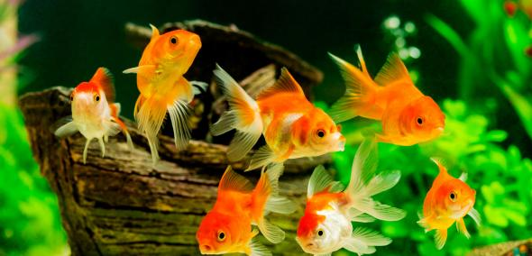
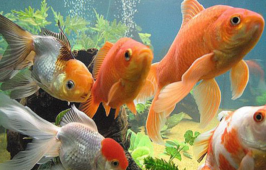
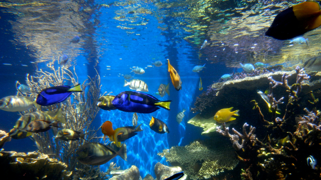

FISHES



The reason for the increase in demand for fish according to a representative of Tesco,a large UK retail chain,is that people have moved to smaller homes and rentals over the last
few years,and it’s not always possible or practical to own a dog or cat.Fish make truly wonderful pets for people who don’t have the time or physical space to devote to a higher-maintenance
companion animal.And under the right circumstances,fish can also be good ‘starter pets’ to teach children the responsibility of caring for a pet.Fish are known to have a tranquil,calming
effect on anyone who watches them glide serenely through the water.Fish are easier and less expensive to feed and care for than other pets but they do require a proper environment and
knowledgeable caretakers.Unlike many dogs and other furry and feathered pets,fish don’t develop separation anxiety or destructive behaviors when you leave them alone at home.Fish are quiet
we never have to worry about a barking or squawking fish upsetting the neighbors or waking a sleeping baby.Fishes come in an infinite variety of sizes, shapes and stunning, vibrant colors.
Fish don’t need to be walked; they don’t require a litter box; and they’ll never leave a surprise for you on your brand new carpet or the afghan your mother-in-law knitted for you last Christmas.
Fish are very clean pets that don’t need to be groomed or have their teeth brushed.Our fish won’t track dirt and mud in from outdoors,or shake litter from his paws all over the house,
and he doesn’t shed, slobber or drool.A fish aquarium of any size,as long it’s well maintained,can be a beautiful addition to any room in your home.Some types of fish interact with their
owners,are playful,and can even be trained to do tricks.Placing a fish tank somewhere in your home gives you wealth or money luck.Science has found many health benefits of keeping a fish tank,
which is a total surprise.Fish tanks are proven to bring health benefits,such as lowering blood pressure,heart rate and reducing stress.Fish tanks are associated to calm patients for surgeries.
If we're looking for a stress-reliever in our work environment,keeping a fish tank can definitely help,as science have suggested.
PREVIOUS
NEXT
HOME PAGE